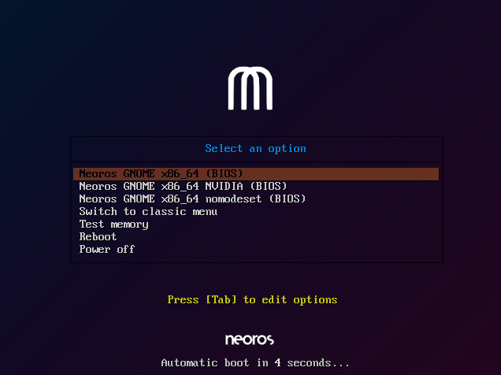
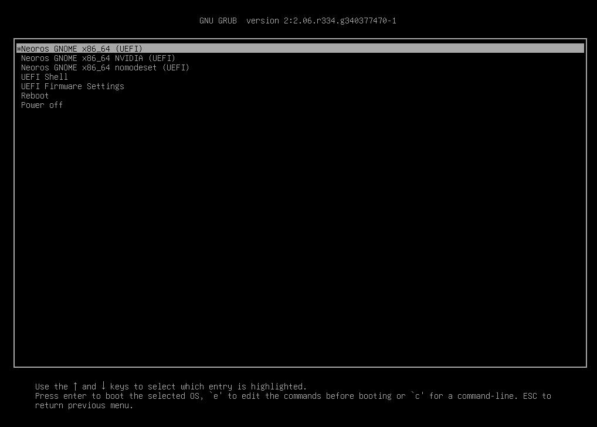
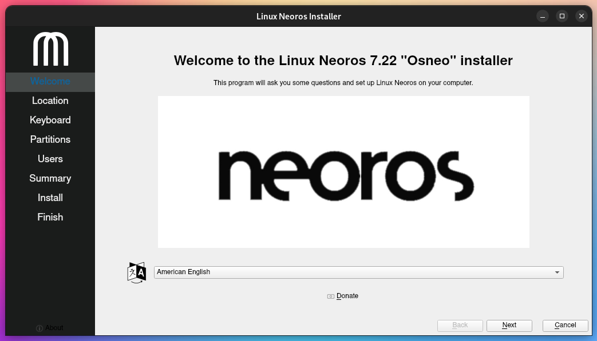
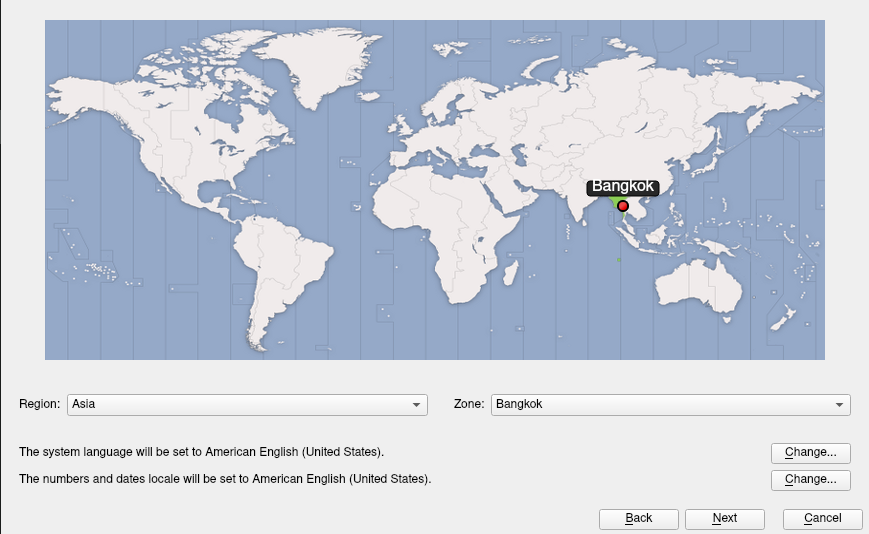
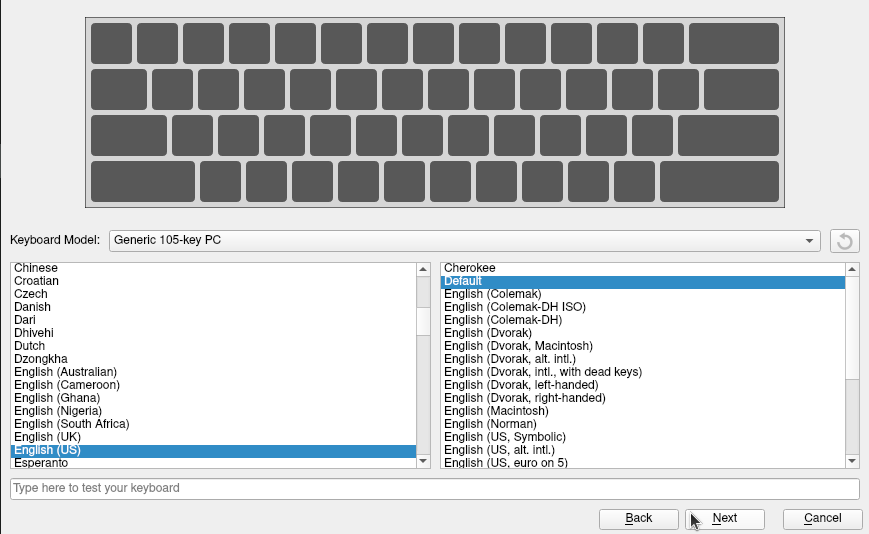
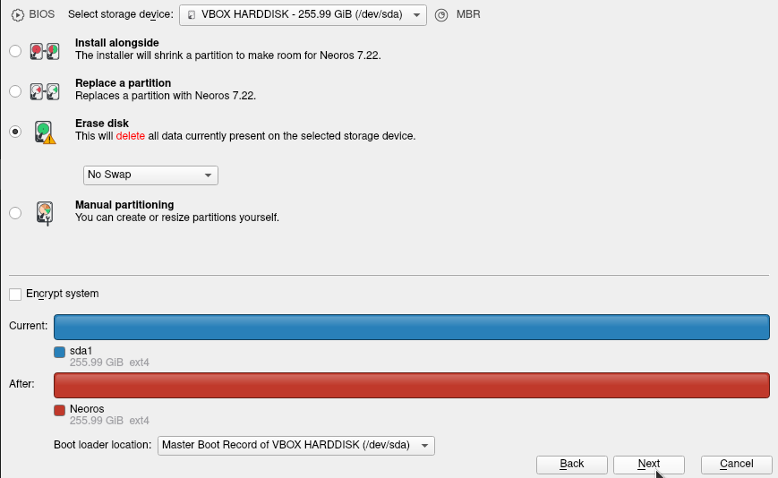
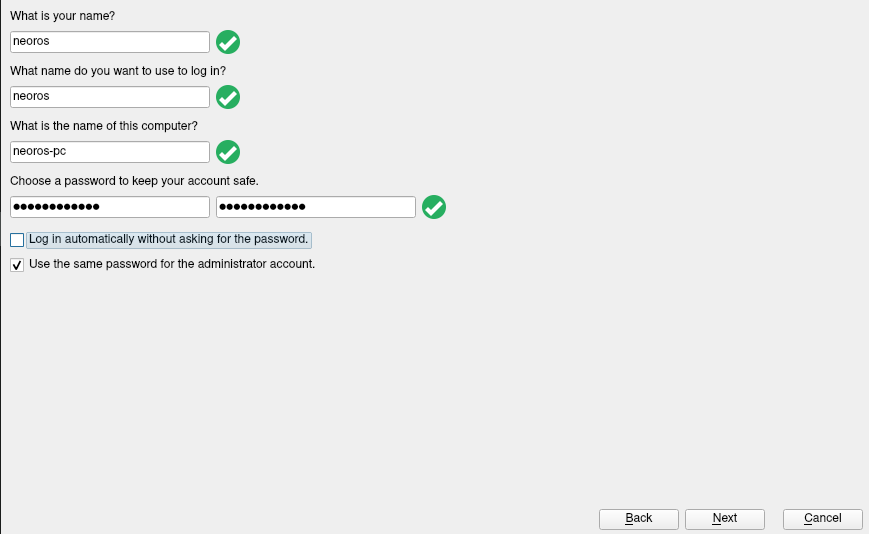
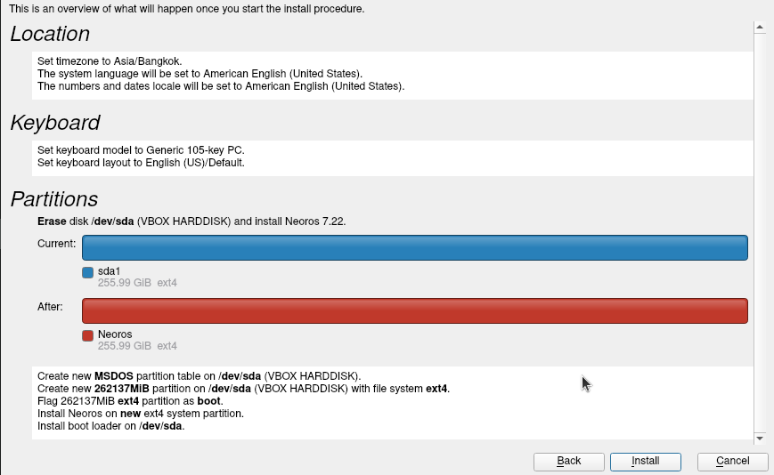
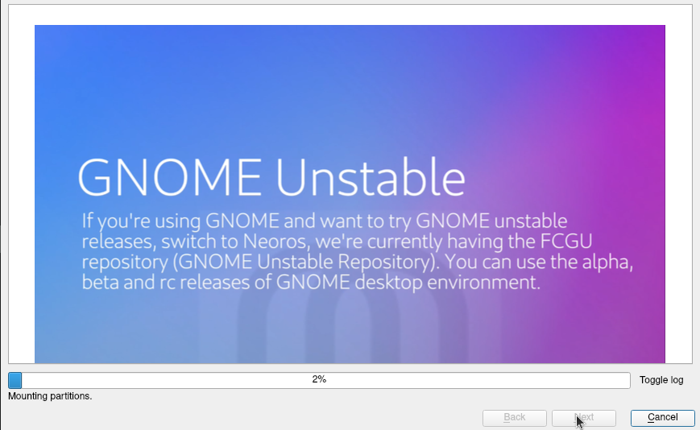

Licensed under the GNU General Public License v3.0
Licensed under the GNU General Public License v3.0
Installation Guide - Linux Neoros
This document is a guide for installing Linux Neoros on your computer (or Virtual Machine).
Unlike Arch Linux, the installation is 100% CLI. But in Linux Neoros, we use ALCI (Arch Linux Calamares Installer), which is the graphical installer for Arch Linux, and we'll use Virtual Machine during the installation guide with no existing operating systems.
WARNING: During the installation, Linux Neoros will erase any existing data on your hard disk and operating systems. Please make sure that you have backed up any important data on the hard disk before doing the irreversible action. You have been warned.
In order to install Linux Neoros, your device must meet the following minimum requirements:
Once you've done backing up all the important data on the hard disk, we'll start preparing for the installation.
Once everything is done, reboot your computer and go to Boot Menu, and choose the installation medium. You'll see the Neoros' welcoming screen, then select the highlighted option.
BIOS Boot Manager:
UEFI Boot Manager:
In this instruction we use Neoros GNOME so we'll choose Neoros GNOME x86_64.
Once it has booted to the desktop, double-click "Install Linux Neoros" application on the desktop.
Select the country/area where you live for time zone and system locale.
Configure your keyboard layout.
There are 4 options for you to pick, depending on the way you want to setup.
In this instruction we'll choose Erase disk, which will wipe all the data on the disk and replace with Linux Neoros.
The encrypt system option is to encrypt Linux Neoros.
When selected, the installer will ask you for the encrypt password, you will have to enter it twice. This password will be used to ask you every time you start up Neoros.
WARNING: We recommend you to use a strong passphrase. A weak passphrase can be easy to guess and can expose some unexpected risks.
Next, we'll create an account for the system. This will include your name, your username, your PC name and a strong password.
If you don't want to enter password in the next login, select Log in automatically without asking for the password. (Bad idea).
If you'd like to set the root's password to the same as the password for your account, select Use the same password for the administrator account.
Everything has done, the installation will let you review the configuration before making the irreversible changes.
If you continue, any changes you've made will be written to the disk and this progress may take a while to finish.
After you click "Install", the installation will starts its work. During the installation, you can watch the presentation to know more about Neoros.
Once the installation is done, you can now reboot the computer and make sure to remove the installation media so you won't have to restart the installation.
Congratulations, you've successfully installed Linux Neoros on your computer.
Now feel free to explore some new things on this whole new distribution.